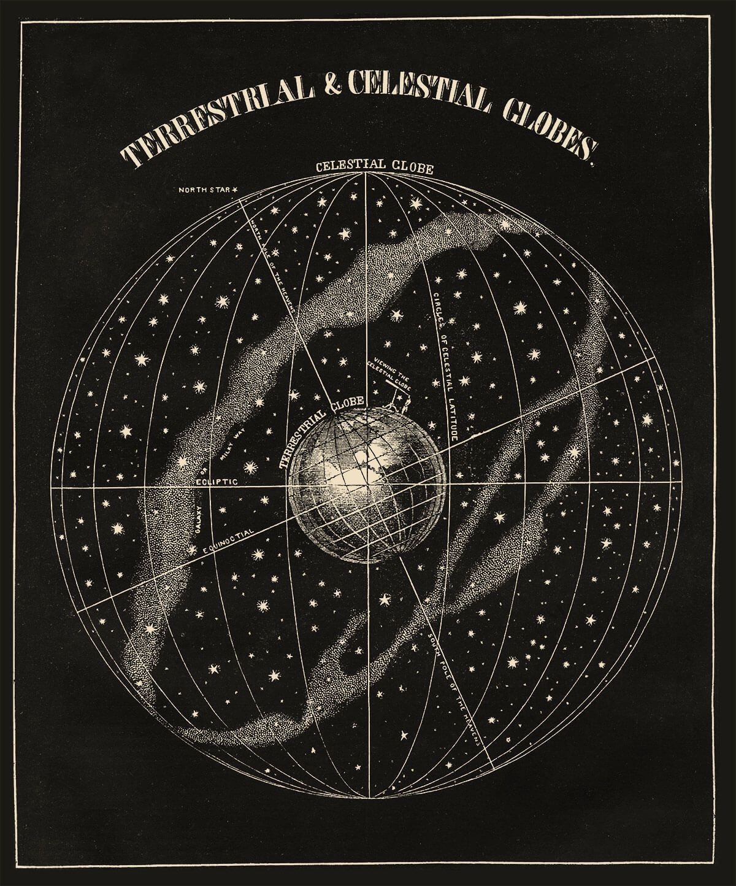
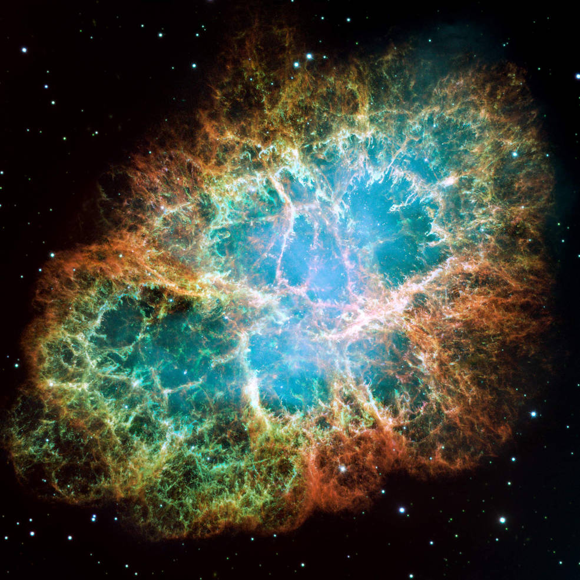
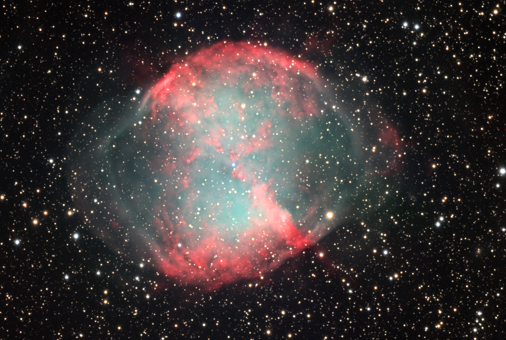
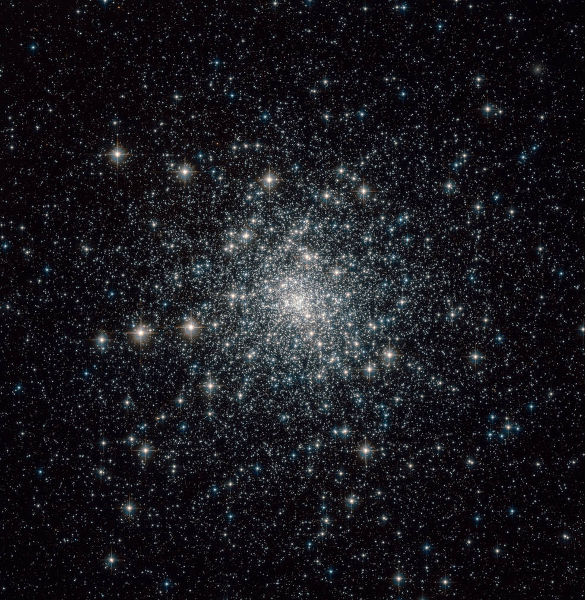
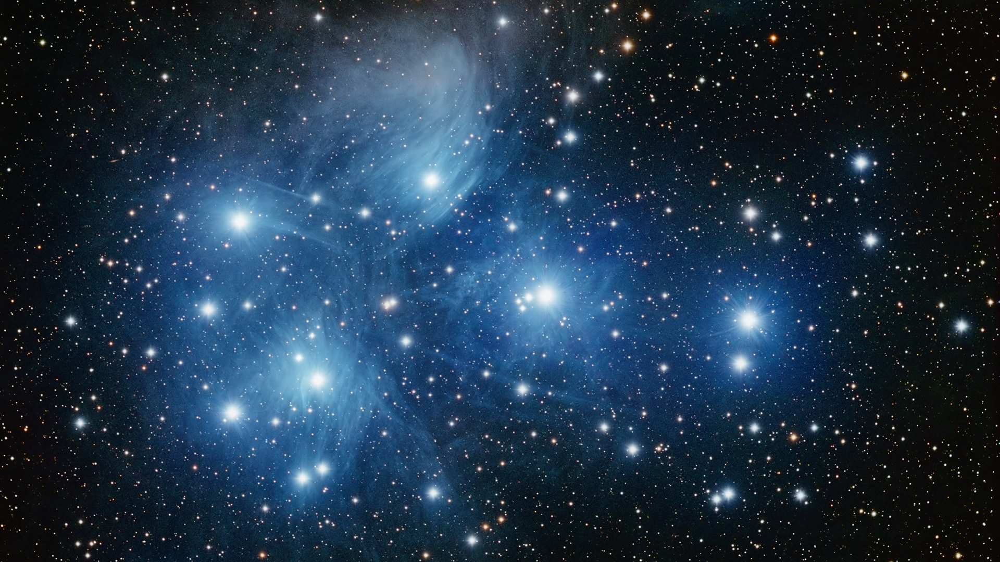
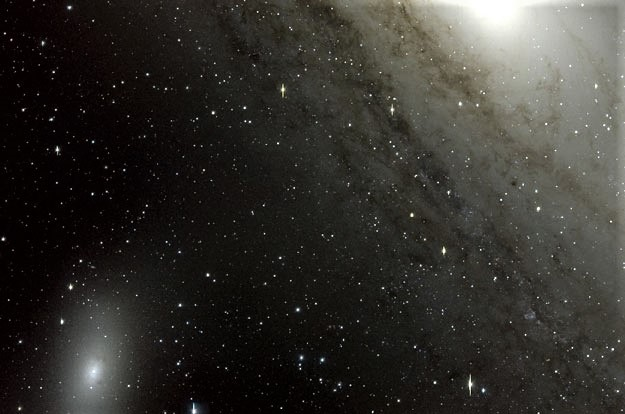

Seleccione la opción
En 1054, los astrónomos chinos notaron una "estrella" que fue visible durante casi un mes en el cielo diurno. La "estrella" que observaron fue en realidad una explosión de supernova, que dio lugar a la Nebulosa del Cangrejo, un remanente de seis años luz de ese suceso violento.
Con una magnitud aparente de 8.4 y ubicada a 6,500 años luz de la Tierra en la constelación de Tauro, este cuerpo celeste fue descubierto por el astrónomo inglés John Bevis en 1731, y luego observado por Charles Messier, quien lo confundió con el cometa Halley. La observación de Messier de la nebulosa lo inspiró a crear un catálogo de objetos celestes que podrían confundirse con cometas.
Los filamentos anaranjados son los restos andrajosos de la estrella y consisten principalmente en hidrógeno. El azul en los filamentos en la parte externa de la nebulosa representa oxígeno neutro. El verde es azufre individualmente ionizado, y el rojo indica oxígeno doblemente ionizado. Estos elementos fueron expulsados durante la explosión de supernova.
Una estrella de neutrones que gira rápidamente (el núcleo ultradenso de la estrella explotada) está incrustada en el centro de la Nebulosa del Cangrejo. Los electrones que giran a casi la velocidad de la luz alrededor de las líneas del campo magnético de la estrella producen la espeluznante luz azul en el interior de la nebulosa.
La estrella de neutrones, como un faro, expulsa haces gemelos de radiación que hacen que parezca pulsar 30 veces por segundo a medida que gira.
La nebulosa puede verse bien bajo un cielo oscuro y despejado, pero puede ser igualmente fácil perderla con el fondo de contaminación lumínica en condiciones menos favorables. Para un ojo poco experto y que usa pequeños instrumentos, puede darse la impresión de que M1 parece un débil cometa sin cola. Solo bajo excelentes condiciones y con mayores telescopios, empiezan a hacerse visibles las finas estructuras filamentosas.
La visibilidad es mayor en verano para el hemisferio sur y en invierno para el hemisferio norte.
M27 es una nebulosa planetaria en la constelación de Vulpecula, a una distancia de 1250 años luz.
Descubierto por Charles Messier en 1764, M27 fue la primera nebulosa planetaria descubierta. Es el resultado de una vieja estrella que ha desprendido sus capas externas, brindando como consecuencia numerosos astros y una brillante exhibición de color.
En la imagen el azul representa oxígeno, el verde representa hidrógeno y el rojo indica azufre y nitrógeno.
M27 alberga muchos nudos de gas y polvo. Algunos parecen dedos apuntando a la estrella central; otros cuerpos celestes son nubes aisladas, con y sin colas, dependiendo de la misma. Su tamaño generalmente varía de 17 mil millones a 56 mil millones de kilómetros, que es varias veces mayor que la distancia desde el sol hasta Plutón, y cada uno contiene tanta masa como tres Tierras.
El gas y el polvo se forman cuando los vientos estelares no son lo suficientemente potentes como para expulsar un grupo de materia más grande, pero son capaces de expulsar partículas más pequeñas, creando un rastro detrás. Las formas cambian a medida que la nebulosa se expande.
Para llegar a apreciar detalles, se requieren cielos oscuros, un telescopio de al menos 100 mm con un ocular de aumentos medios y utilizar la técnica de visión lateral. Al aplicar más aumentos se incrementa el contraste y el borde de la nebulosa destaca más. Hay que buscar un disco de luz grisáceo para mayor visualización (en prismáticos aparece como un punto un tanto borroso), llenando el campo de visión como si se tratara de una nube esparcida sobre el cielo negro, con su núcleo ovalado orientado de nordeste a sudoeste.
La visibilidad durante el año: es en primavera para el hemisferio sur y en otoño para el hemisferio norte.
M30 es un cúmulo globular en la constelación de Capricornio. Es bastante brillante, y relativamente grande. Hay varias estrellas cerca del borde, que se pueden distinguir con un poco de dificultad.
Fue descubierto por Charles Messier en 1764. Se encuentra aproximadamente a 28,000 años luz de la Tierra en la constelación de Capricornio. Tiene una magnitud visual aparente de 7.7 y se puede ver a través de un par de binoculares.
Aunque los cúmulos globulares como M30 están poblados principalmente por estrellas viejas, la densidad del enjambre estelar conduce a algunas estrellas viejas que aparentemente reclaman su juventud como "rezagados azules".
Utilizando observaciones del Hubble, los astrónomos han identificado dos tipos de rezagados azules en M30: los que se forman en colisiones frontales cercanas entre dos estrellas y los que están en sistemas binarios donde una estrella extrae hidrógeno de su compañero.
Como objeto de observación, es bastante denso (como lo indica su clase de concentración V) y es un bello objeto aún en los telescopios pequeños. Sólo se le conocen una docena de estrellas variables.
Su corazón contiene una población estelar extremadamente densa y ha experimentado una destrucción de su núcleo como, por lo menos, otros 20 de los 147 cúmulos globulares catalogados en nuestra galaxia.
Su visibilidad durante el año es mejor en primavera para el hemisferio sur, y en otoño para el hemisferio norte.
Comúnmente llamadas las Pléyades o las Siete Hermanas, M45 se conoce como un cúmulo abierto de estrellas. Contiene más de mil estrellas que están unidas libremente por la gravedad, pero está dominada visualmente por un puñado de sus miembros más brillantes.
El grupo de las Pléyades se ha observado desde la antigüedad, por lo que no tiene un descubridor conocido. Sin embargo, Galileo Galilei fue el primero en observar las Pléyades a través de un telescopio.
M45 se encuentra a una distancia promedio de 445 años luz de la Tierra, en la constelación de Tauro. Tiene una magnitud aparente de 1,6 y se puede ver a simple vista.
En la imagen se observa los misteriosos y tenues zarcillos de una nube interestelar destruida por una de las estrellas más brillantes de M45. Al igual que los fuegos artificiales que iluminan las nubes oscuras por la noche, la luz de la estrella se refleja en la superficie de nubes negras de gas frío y polvo. Esto produce una nebulosa de reflexión.
Los coloridos rayos de luz en la esquina superior derecha, que emanan de la estrella, son un fenómeno óptico producido dentro del telescopio. Las volutas casi rectas, de color azul-blanco que apuntan hacia misma esquina son corrientes de grandes partículas de polvo.
A medida que la nube se mueve hacia Merope, una de sus estrellas, sus partículas de polvo más pequeñas se ralentizan por la presión de radiación de la estrella más que las partículas más grandes. Las partículas de polvo grandes continúan hacia la estrella, mientras que las más pequeñas quedan atrás.
El cúmulo es un gran objeto visto con binoculares y telescopios de campo ancho, mostrando más de 100 estrellas en un campo de 1,2 grados en diámetro. Con telescopios, frecuentemente resulta demasiado grande como para ser vista en un único campo de vista en magnificación mínima. El cúmulo contiene un número de estrellas dobles y múltiples.
La visibilidad durante el año es conveniente en verano para el hemisferio sur, y en invierno para el hemisferio norte.
M51 es el miembro más grande de un pequeño grupo de galaxias, que también alberga M63 y un número de galaxias más débiles. Con una distancia estimada en 37 millones de años luz, y su aspecto verdaderamente notable, es un grande y luminoso cuerpo celeste. Una de las características más destacadas de la “Galaxia del Remolino” es su estructura espiral.
Descubierto por Charles Messier en 1773, M51 se encuentra a 31 millones de años luz de la Tierra en la constelación Canes Venatici. Tiene una magnitud visual aparente de 8,4. La vista frontal de la galaxia Whirlpool y su cercanía a la Tierra permiten a los astrónomos estudiar la estructura de una galaxia espiral clásica y los procesos de formación de estrellas.
Los brazos elegantes y sinuosos de la majestuosa galaxia espiral M51 aparecen como una gran escalera de caracol que se extiende por el espacio. En realidad, son largos carriles de estrellas y gas con polvo.
Estos brazos tienen un propósito importante: son fábricas de formación estelar, que comprimen el gas de hidrógeno y crean grupos de nuevas estrellas.
Algunos astrónomos piensan que estas extensiones son particularmente prominentes debido a los efectos de un encuentro cercano con NGC 5195, la pequeña galaxia amarillenta en la punta más externa de una de las extremidades. La galaxia compacta parece estar tirando del brazo, cuyas fuerzas de marea provocan la formación de nuevas estrellas. La pequeña galaxia ha estado deslizándose más allá del Whirlpool durante cientos de millones de años.
En la imagen de Hubble de M51, el rojo representa la luz infrarroja y el hidrógeno dentro de las regiones gigantes que forman estrellas. El color azul se puede atribuir a estrellas jóvenes y calientes, mientras que el color amarillo son las más viejas.
Localizar M51 no es demasiado difícil si se tiene un cielo oscuro, pero esta galaxia en particular es muy difícil cuando hay contaminación lumínica de la luz de la luna . En los lugares donde los cielos están claros y oscuros, es fácil ver la estructura espiral, incluso en telescopios pequeños, o observarla con binoculares. Buenos telescopios de campo con rápidas distancias focales hacen un excelente trabajo en esta galaxia y su compañera y se puede distinguir el núcleo de ambas en una buena noche, incluso desde una mala ubicación.
La mejor visibilidad es en la época de otoño para el hemisferio sur, y en primavera para el hemisferio norte.
La galaxia elíptica M110 (conocido también como Objeto Messier 110, Messier 110, M110 o NGC 205) es una galaxia elíptica enana orbitando la galaxia de Andrómeda (siendo considerada inicialmente como un miembro de la Nebulosa de Andrómeda). Como tal es un miembro del Grupo Local de galaxias.
Caroline Herschel descubrió de manera independiente esta nebulosa el 27 de agosto de 1783,siendo catalogada por su hermano William Herschel el 5 de octubre de 1784 bajo la designación H V.18. Fue añadida al catálogo Messier en 1966 por Kenneth Glyn Jones.>
Está rodeada por un halo de cúmulos globulares pertenecientes a M 31, de los cuales siete de ellos aparecen dentro del cuerpo de la galaxia (se aprecian como simples estrellas). En el núcleo de la misma se aprecian dos o tres manchas de polvo oscuro.
En su centro se forman nuevas estrellas, habiéndose determinado que esto ha estado ocurriendo desde hace al menos más de 300 millones de años de manera más o menos constante.
En la actualidad es, frecuentemente, considerada una galaxia enana esferoidal, y no elíptica. Sería la primera esferoidal enana conocida, y su masa ha sido estimada entre 3,6 y 15 miles de millones de masas solares.
Aparentemente y, a pesar de su relativo pequeño tamaño, poseería también un importante sistema de 8 cúmulos globulares en el halo que la envuelve.
Su visibilidad durante el año es en verano para el hemisferio sur y en invierno para el hemisferio norte.Para un observador terrestre, M110 puede observarse al noroeste del bulbo de la galaxia de Andrómeda,siendo visto como una pequeña mancha borrosa (en los grandes prismáticos desde un sitio de cielo oscuro) o su estructura en detalle (en un telescopio de tamaño mediano). Se adapta bien a una pequeña cantidad de contaminación lumínica y es considerado un reto suburbano excelente.